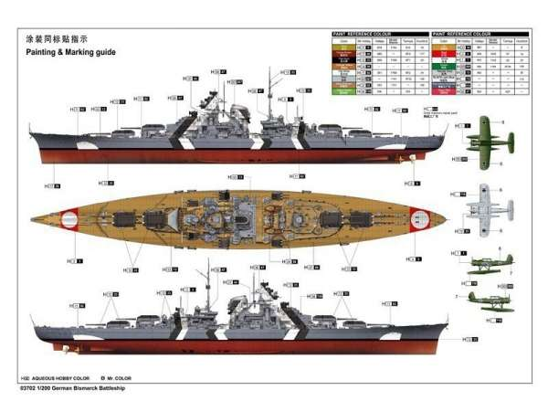
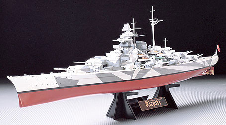

STRONA GŁÓWNA
Pancerniki
Nazwa okrętu
Dłuość
Szerokość
Wyporność
Bismarck
250,50 m
36 m
standardowa: 45 451 t
pełna: 49 406 t
Tirpitz
253,6 m całkowita
241,72 m na linii wodnej
36 m
projektowa: 44 755 ts
bojowa: 49 628 ts
Bismarck

Tirpitz
